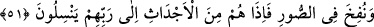
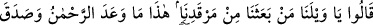
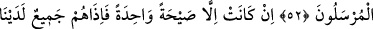
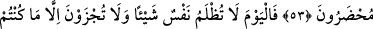
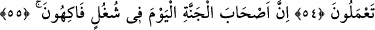
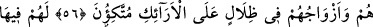
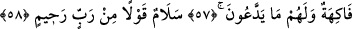
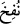
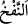
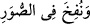

O GÜN HİÇBİR KİMSE
HAKSIZLIĞA UĞRAMAZ
51. Nihayet Sûr’a üfürülecek. Bir de bakarsın ki onlar kabirlerinden kalkıp
koşarak Rablerine giderler.
52. (İşte o zaman:) Eyvah, eyvah! Bizi kabrimizden kim kaldırdı? Bu, Rahmân’ın
vâdettiğidir. Peygamberler gerçekten doğru söylemişler! derler.
53. Olan müthiş bir sesten ibarettir. Bunun üzerine onların hepsi hemen
huzurumuzda hazır bulunurlar.
54. Bugün hiçbir kimse en ufak bir haksızlığa uğramaz. Siz orada ancak
yaptıklarınızın karşılığını alırsınız.
55. Bugün cennetlikler, gerçekten nimetler içinde safa sürerler.
56. Onlar ve eşleri gölgeler altında tahtlara kurulurlar.
57. Orada onlar için her çeşit meyve vardır. Bütün arzuları yerine getirilir.
58. Onlara merhametli Rabb’in söylediği selam vardır.
“Nihayet Sûr’a üfürülecek.” “
” fiilinin mâzî/geçmiş zaman kalıbıyla getirilmesi,
üfürülme işinin kesin olarak meydana geleceğine delâlet etmek içindir. “
” bir şeyin
içine rüzgar üfürmektir.
Sûr hakkında iki vecih/yorum vardır: Birincisi, bu sur İsrafil (a.s.)’ın üfleyeceği
boynuzdur. Bu boynuzda her ruh sayısınca delik vardır. Bu delik o ruhun makamıdır.
Buna göre mânâ şöyledir: Ölülerin dirilip yeniden hayat bulmalarına sebep olacak bir
üfürüşle Sûr’a üfürülecek. İkincisi, bu kelime “
” kelimesinin çoğuludur. Bazı kıraat
imamlarının bu kelimeyi “
” şeklinde okuması bu görüşü teyid eder. Buna
göre mânâ şöyledir: Sûretlere ruhlar üfürülecek. Bu da yine İsrafil (a.s.)’ın sûra